Investigation
The Jeep Wrangler Is America’s Favorite Way to Die Outdoors
At 0.84 deaths per 100M VMT, the Wrangler is the safest Jeep per mile. It still killed 1,842 people. Only 19.3% were impaired. The lifestyle vehicle paradox.
Every fatal crash in America, charted.
Data from NHTSA FARS 2014–2023 bulk CSV. Covers ALL occupant fatalities in vehicles involved in fatal crashes, all model years on the road. Estimated rates use sales-based fleet estimates × NHTS class-average annual miles—see Methodology for caveats.
| ☐ | # ▲▼ | Vehicle ▲▼ | Class ▲▼ | 5yr Deaths ▲▼ | Annual Avg ▲▼ | Est. Fleet ▲▼ | Est. Rate ▲▼ |
|---|
Impairment defined as BAC > 0 (alcohol) or specific drug detected in toxicology (drugs). Testing rates vary significantly by state and jurisdiction — actual impairment rates may be higher than reported. Models with 100+ drivers in fatal crashes shown.
| ☐ | # ▲▼ | Vehicle ▲▼ | Class ▲▼ | Drivers ▲▼ | Any % ▲▼ | Any # ▲▼ | Alc % ▲▼ | Alc # ▲▼ | Drug % ▲▼ | Drug # ▲▼ |
|---|
Shows total occupant deaths by vehicle model year across FARS 2014–2023 data. Older model years have more cumulative years of exposure on the road; this chart reflects fleet-age composition, not inherent vehicle safety differences. Select up to 5 vehicles to compare.
2024 data is an early NHTSA estimate subject to revision. Bars show total fatalities (left axis); line shows rate per 100M VMT (right axis).
Rates calculated from NHTSA FARS fatality counts and FHWA VM-1 vehicle miles traveled. Per-model VMT is not publicly available; these rates apply at the broad vehicle-class level only.
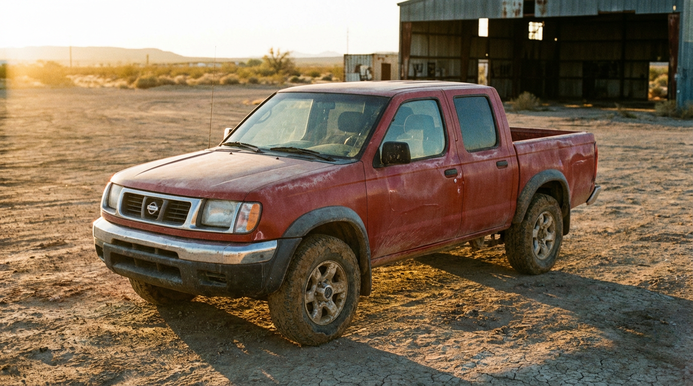
The Frontier went virtually unchanged from 2004 to 2021 while competitors redesigned around it. Rate: 1.45 per 100M VMT — 1.8× the Tacoma, 5.2× the Colorado.
The compact SUV segment hides a 5× safety gap: the Escape kills at 0.95 per 100M VMT while the RAV4 manages 0.19. Same price, same cross-shopping — wildly different odds.
The G35, G37, and Q50 span 20 years and 698 deaths. Across all three, ~24% of fatal-crash drivers were impaired — 4 points above the national average, every single generation.
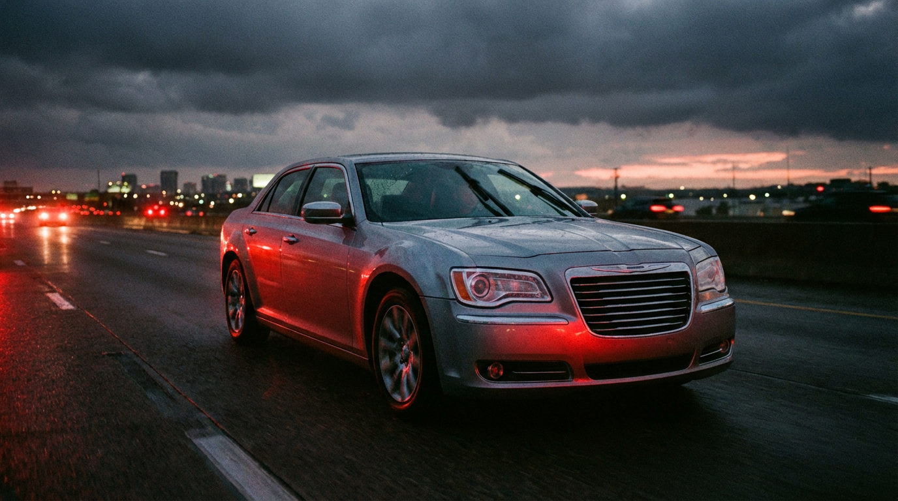
Same LX platform, same factory, same engines. The “respectable” sedan kills at 1.87 per 100M VMT — the muscle car at 0.75.
March 10, 2026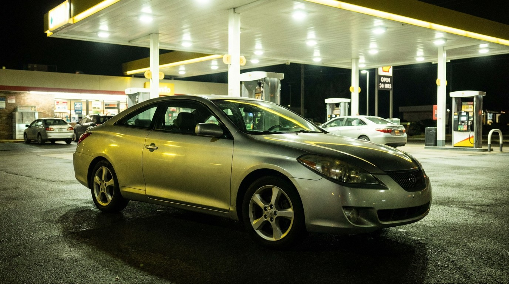
The Solara shares its platform, engine, and factory with the Camry. It kills at 4.25 per 100M VMT — more than double the Camry’s 2.03. Only 4.1% impairment. Sober people dying in a Toyota.
GM killed the brand, but 2.45 million Pontiacs still haunt American roads — Grand Prix (970 deaths), G6 (908), Grand Am (713). Every single FARS death came from a ghost.
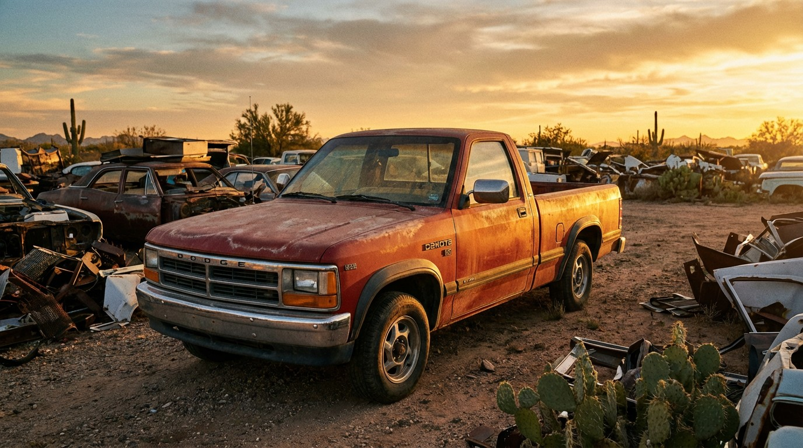
At 2.62 deaths per 100M VMT from a 350K fleet, the Dakota was the second-deadliest mid-size pickup — and Dodge’s answer was to discontinue it entirely.
The world’s best-selling car is the 4th deadliest sedan in FARS — not because it’s dangerous, but because 2.3 million of them drive 26.7 billion miles a year.
March 10, 2026At 7.83 deaths per 100M VMT, the rebadged Suzuki Vitara was 41× deadlier per mile than the RAV4 it competed against — and GM put a bowtie on it.

At 4.83 deaths per 100M VMT, the S-10 was the deadliest compact pickup by a grotesque margin — then the Colorado replacement dropped it to 0.28.
America’s most trusted fleet vehicle — chosen by police, taxis, and government agencies — had a fuel tank that turned rear-end crashes into cremations.
March 10, 2026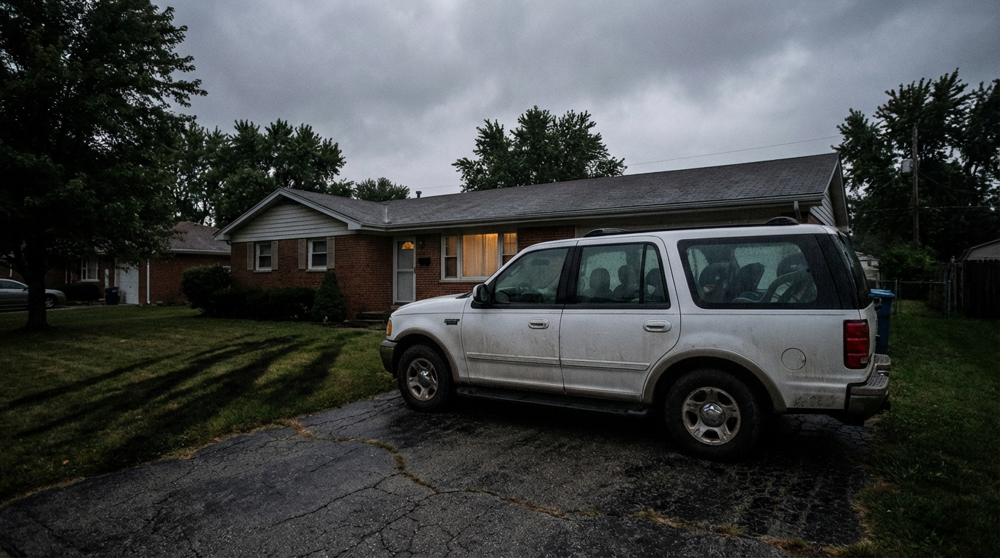
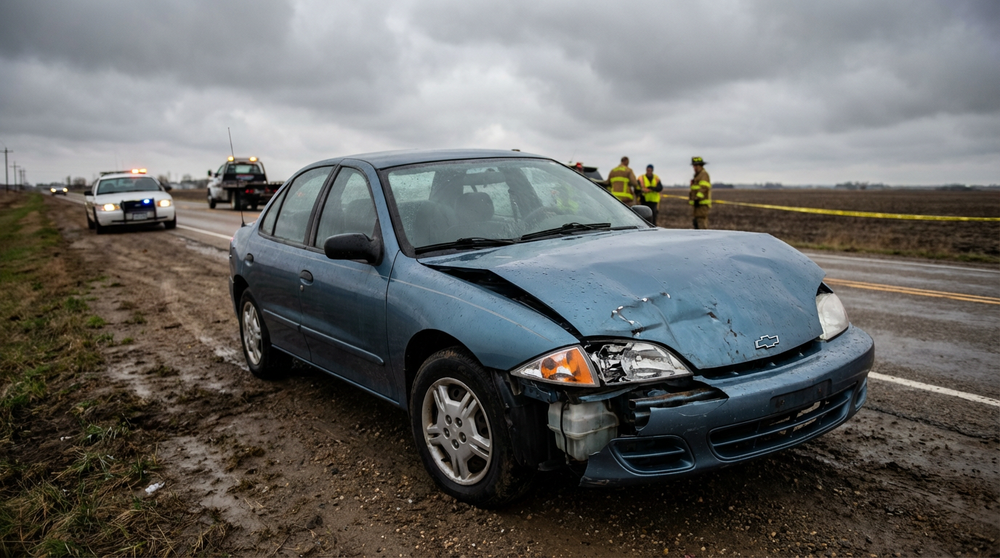
1,344 dead at 2.67 per 100M VMT — 32% deadlier than the Camry, with 23.5% impairment. The retirement sedan was secretly lethal.
At 0.84 deaths per 100M VMT, the Wrangler is the safest Jeep per mile. It still killed 1,842 people. Only 19.3% were impaired. The lifestyle vehicle paradox.

The Trailblazer's 2.83 fatality rate is nearly 2× the Explorer. Its twin, the GMC Envoy, adds 988 more deaths. One platform, two badges, 3,461 dead.

The Malibu matches the Camry’s fatality rate at 2.03 deaths per 100M VMT, but generates zero headlines. The Ford Fusion is 40% safer per mile. GM’s most forgettable sedan is also its most quietly lethal.
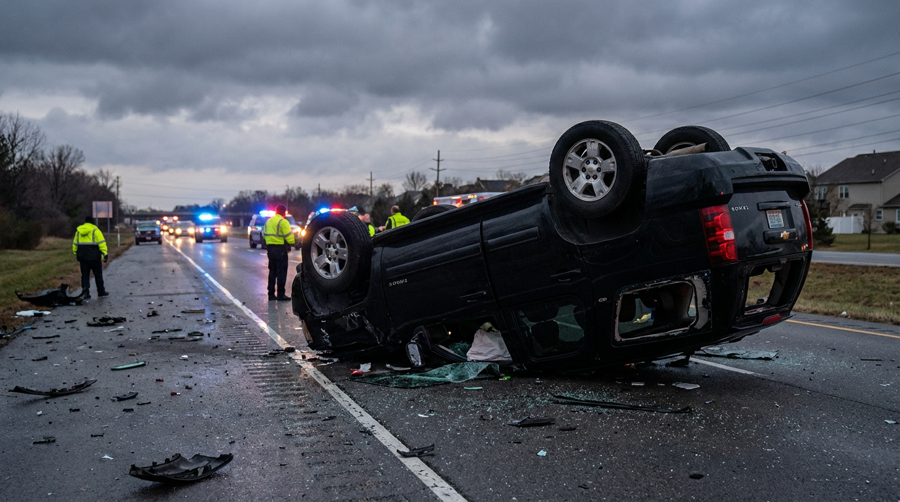
At 2.49 deaths per 100M VMT, the Tahoe is deadlier per mile than a Honda Civic — despite weighing nearly twice as much. The Silverado shares its platform and kills at half the rate. Size isn't safety.
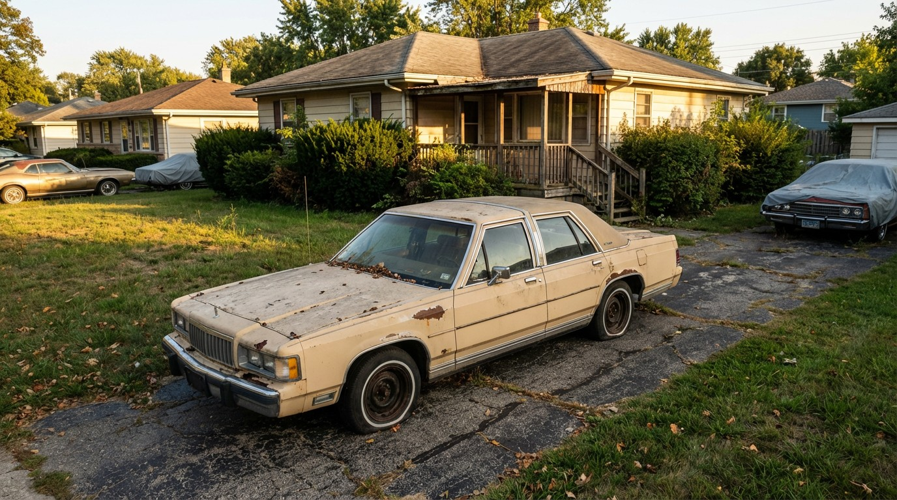
Three Ford Panther platform cars, same bones, wildly different fates. The Grand Marquis kills at 2.29 per 100M VMT — 2.7× deadlier than the Town Car (0.86). Same frame, same engine. The difference is who bought them.
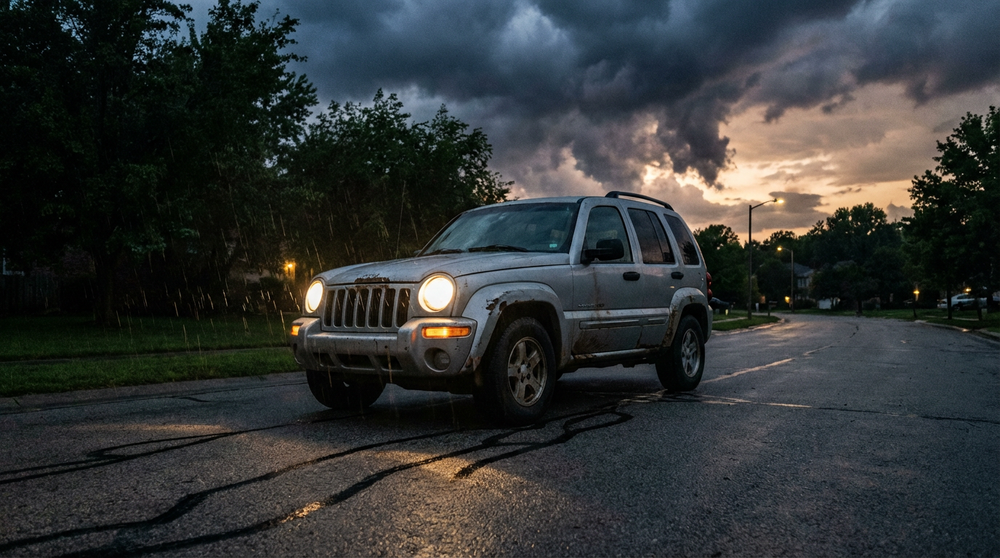
2,276 deaths at 1.73 per 100M VMT from a 1.05M fleet — while the Grand Cherokee’s 1.84M fleet manages just 0.51. Same brand, same name, 3.4× the death rate. Cherokee drivers are more sober too.
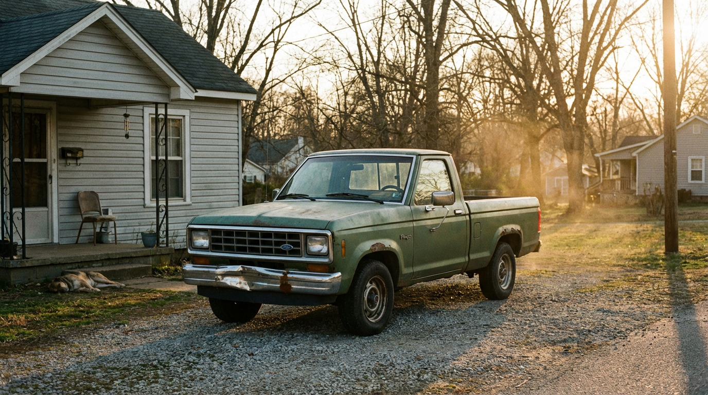
3,089 deaths at 2.91 per 100M VMT. Every compact truck in FARS is deadlier per mile than its full-size counterpart — S-10 at 4.83 vs Silverado at 1.25, Dakota at 2.62 vs Ram at 0.78. Smaller doesn’t mean safer.
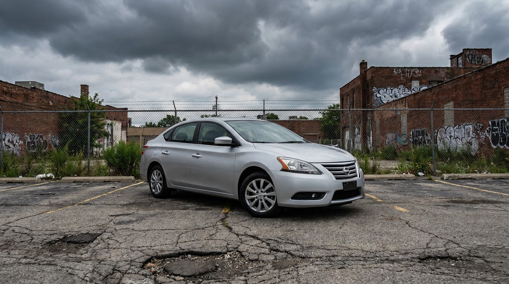
2,571 deaths at 2.13 per 100M VMT — deadlier than the Corolla, Elantra, and Cruze. The Sentra is 3.4× more lethal per mile than the Cruze, and its own sibling Versa is somehow half as deadly.
At 2.73 deaths per 100M VMT, the “Ultimate Driving Machine” is 8.5× deadlier than the Audi A4. Its 1,237 fatalities dwarf every luxury competitor, and 22.1% of its drivers in fatal crashes were impaired.
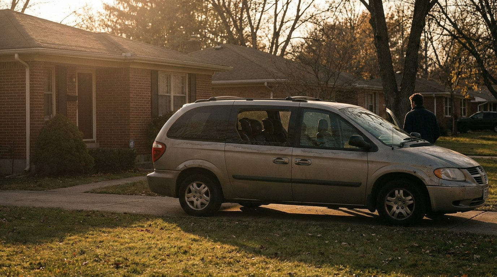
America’s default family hauler has the lowest impairment rate in FARS at 15.3%. Its 1,782 deaths are overwhelmingly sober parents on routine trips.
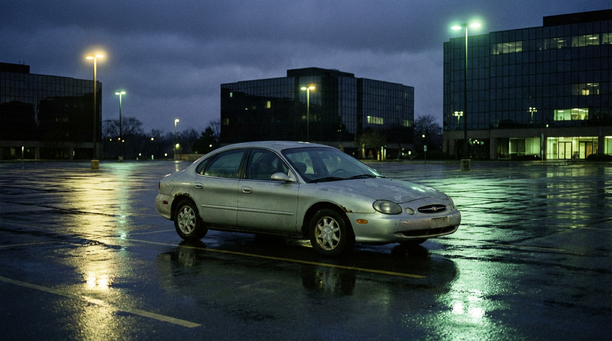
Once the best-selling car in the country, the Taurus ended its life as a fleet-only rental sedan. Its 2.74 per-mile death rate is more than double the Fusion that replaced it.
The safest car in the world can still be one of the deadliest — if enough people drive it. The Civic’s 2.25 per-mile rate beats every compact rival.
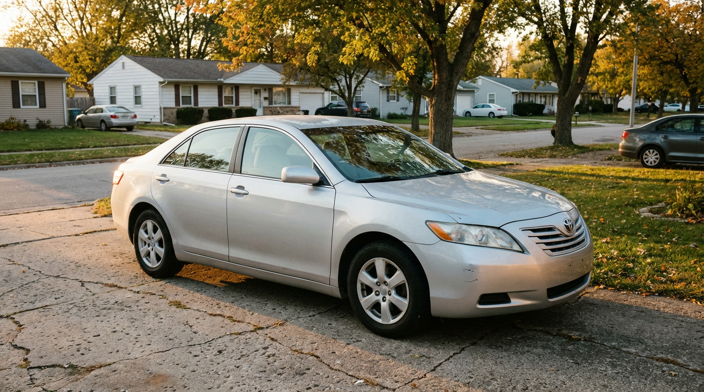
Below-average fatality rate, 5th highest body count. The paradox of safe cars that kill thousands through sheer ubiquity.
The internet meme about reckless Altima drivers is backed by hard FARS data — 7th deadliest vehicle in America with a 2.88 fatality rate. But the impairment rate is surprisingly average.
Of 4,339 Charger drivers in fatal crashes, 985 were impaired — a 22.7% rate. It’s a “sedan” with a Hemi V8 and a customer base that skews thirsty.
March 9, 2026
At 2.52 per 100M VMT, the Focus was deadlier per mile than every compact competitor — Civic, Corolla, Elantra. And 80% of fatal crashes were sober.
At 5.10 deaths per 100M VMT, the Cobalt is the deadliest compact sedan in the database. Its replacement, the Cruze, is 8× safer. The ignition switch scandal was just the beginning.
At 3.44 deaths per 100M VMT, the Camaro kills at half the Mustang’s rate — but with a higher impairment percentage. 1,204 dead in a decade.

At 5.11 deaths per 100M VMT, the Maxima is nearly 2× deadlier than the Altima — and it’s not even a sports car.
41,593 pickup fatalities over a decade. The Silverado alone tops the entire database at 9,591. But per mile, they’re safer than sedans.
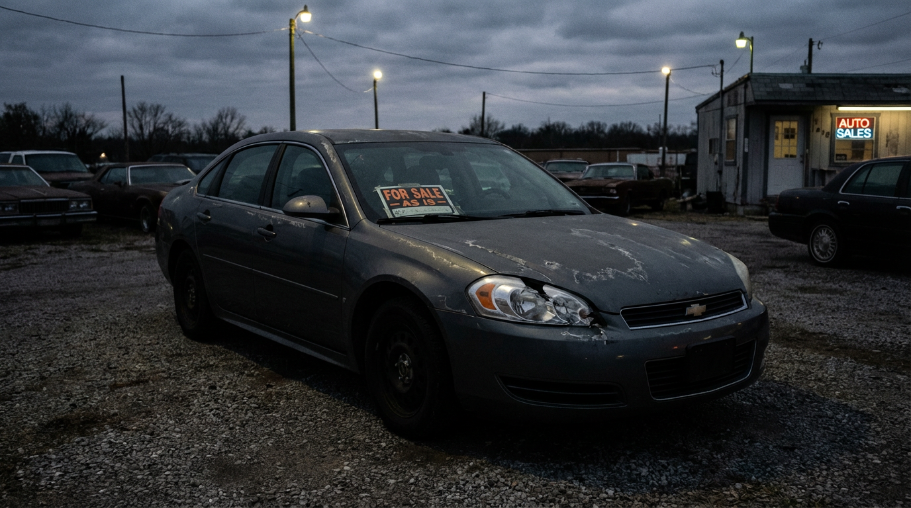
At 5.0 deaths per 100M VMT and 3,774 fatalities, the fleet-favorite Impala is 2.5× deadlier than its own sibling, the Malibu.
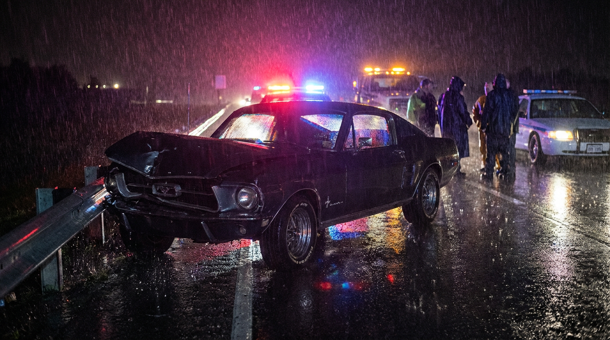
At 6.02 deaths per 100M VMT and 2,739 fatalities, the Mustang is the deadliest mainstream vehicle on American roads.
At 8.54 deaths per 100M VMT, this economy coupe out-kills the Mustang, Camaro, and Corvette — and its drivers are comparatively sober.
Model Y posts 0.03 deaths per 100M VMT. Model S posts a 24% impairment rate. Same brand, different species.
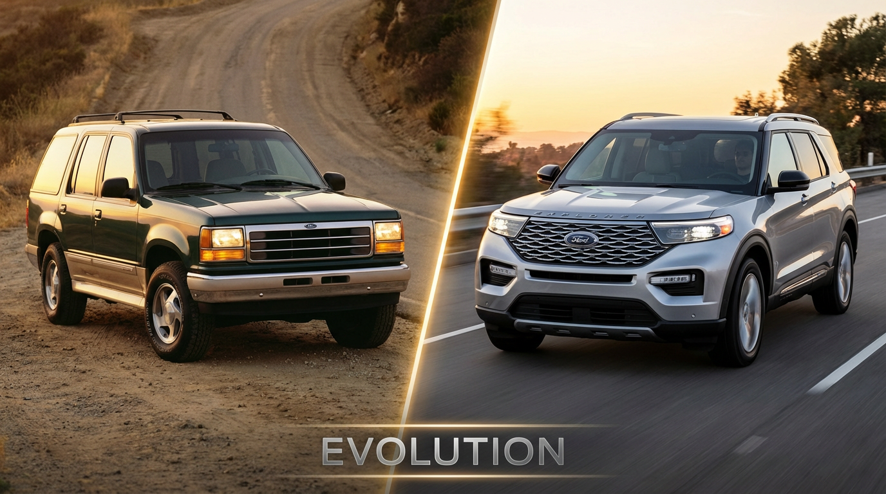
503 fatal crash involvements for the 2002 model year. 8 for the 2022. A 98.4% reduction.
26.2% tested positive for alcohol or drugs — the highest of any major sports car. The Buick Park Avenue hits 31.7%.

The fatality rate gap between the Chevrolet Tracker and the Porsche Macan is 261-fold.
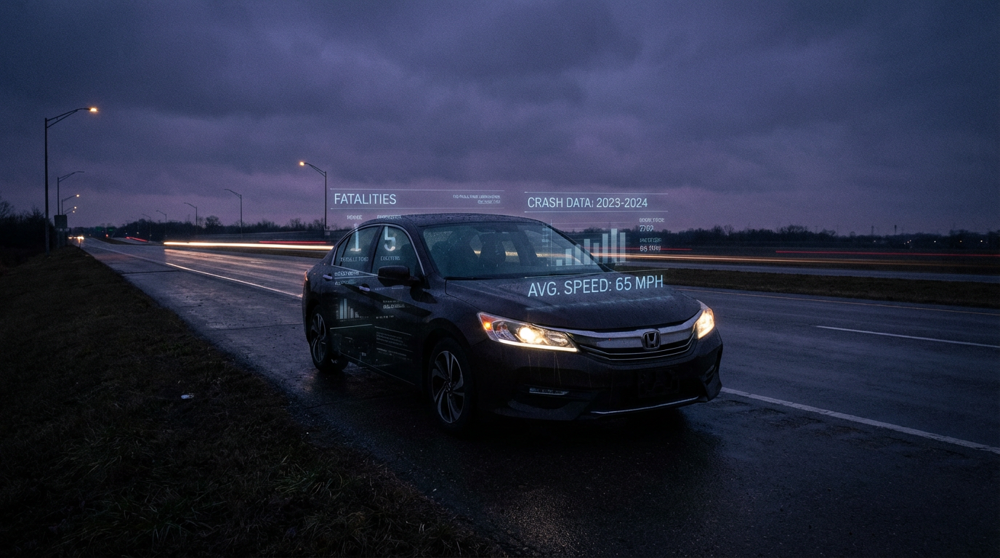
7,102 Accord deaths vs. 4,648 for all four muscle cars. Ubiquity is its own kind of danger.
A minivan out-drinks the Mustang. Impairment correlates with vehicle price, not vehicle type.

3rd-lowest impairment rate. 3rd-highest death rate. The most unsettling data point in the database.
AI-generated editorial analysis of NHTSA FARS public data. See Methodology for caveats.
The Fatality Analysis Reporting System (FARS) is a census of all fatal motor vehicle crashes in the United States, maintained by NHTSA. FARS covers all crashes nationally and can be normalized by vehicle miles traveled (VMT) — but only at the broad vehicle-class level (passenger cars, light trucks, motorcycles), not per make/model.
VMT data comes from the FHWA Highway Statistics Table VM-1, which estimates total miles driven annually by vehicle type. Dividing FARS fatalities by VMT yields the "fatality rate per 100 million VMT" — the standard metric used in NHTSA Traffic Safety Facts publications.
The FARS per-model section aggregates all occupant fatalities across 2014–2023 from NHTSA FARS bulk CSV downloads, grouped by make/model. This data includes:
Since per-model VMT data does not exist publicly, estimated fatality rates use a proxy method:
Key caveats:
Impairment data comes from the FARS PERSON.csv file, filtered to drivers only (PER_TYP = 1). Each driver record is joined to its vehicle record via ST_CASE and VEH_NO.
Key caveats:
The MOD_YEAR field from FARS VEHICLE.csv identifies the model year of each vehicle involved in a fatal crash. Deaths are aggregated by (make, model, model year) across the 2014–2023 observation period.
This dashboard covers fatal crashes only from the FARS census. NHTSA also maintains the Crash Report Sampling System (CRSS), which covers all police-reported crashes (including injuries and property damage) — but CRSS is a probability-based sample, not a census, and is not incorporated here.
NHTSA FARS database → |
NHTSA Traffic Safety Facts →
FHWA Table VM-1 →
FARS bulk CSV downloads → |
NHTS (National Household Travel Survey) →
FARS/CRSS Coding and Validation Manual →